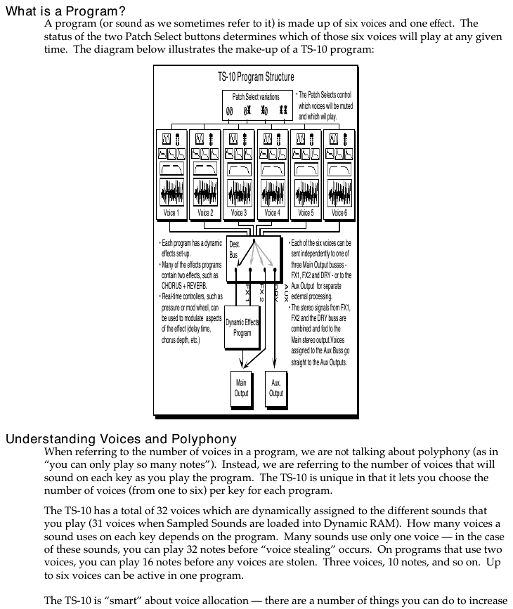
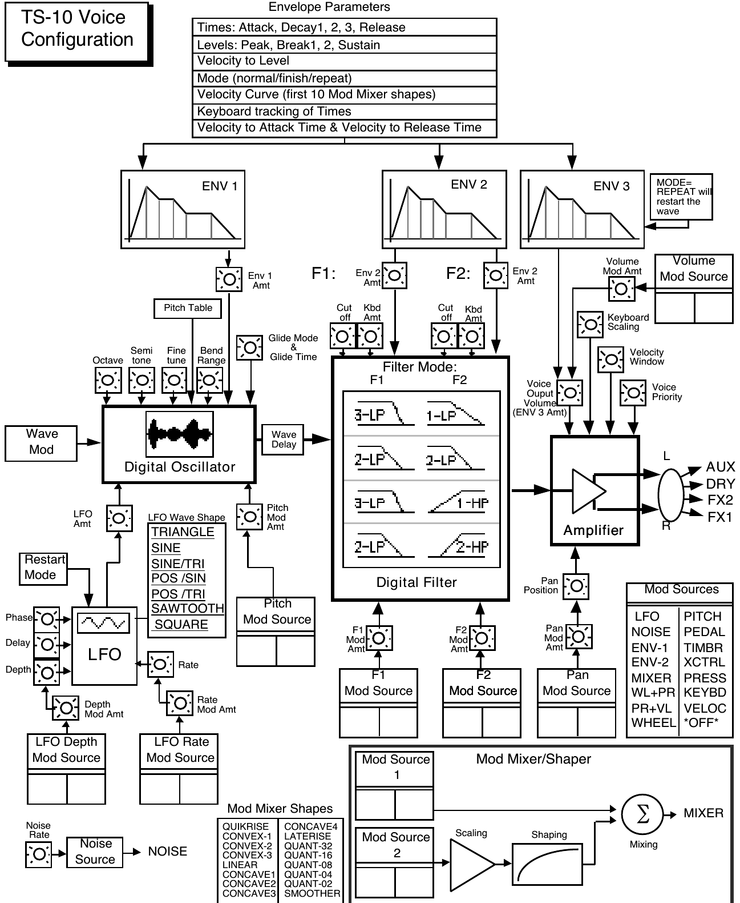

Performance / Composition Synthesizer · Version 3.0
Section 8 — Understanding Programs
In this section, we will show you how to edit a TS-10 Program. For detailed descriptions of the many parameters, refer to the following section.
What is a Program?
A program (or sound as we sometimes refer to it) is made up of six voices and one effect. The status of the two Patch Select buttons determines which of those six voices will play at any given time. The diagram below illustrates the make-up of a TS-10 program:

Understanding Voices and Polyphony When referring to the number of voices in a program, we are not talking about polyphony (as in “you can only play so many notes”). Instead, we are referring to the number of voices that will sound on each key as you play the program. The TS-10 is unique in that it lets you choose the number of voices (from one to six) per key for each program.
The TS-10 has a total of 32 voices which are dynamically assigned to the different sounds that you play (31 voices when Sampled Sounds are loaded into Dynamic RAM). How many voices a sound uses on each key depends on the program. Many sounds use only one voice — in the case of these sounds, you can play 32 notes before “voice stealing” occurs. On programs that use two voices, you can play 16 notes before any voices are stolen. Three voices, 10 notes, and so on. Up to six voices can be active in one program.
The TS-10 is “smart” about voice allocation — there are a number of things you can do to increase the apparent polyphony of a sound and to minimize the effects of voice stealing. For example:
• As soon as a voice is finished playing (either because it reached the end of the wave or because the volume envelope went to zero), that voice is returned to the pool, and a new note can use that voice rather than stealing one that is still sustaining.
• You can assign low, medium or high priority to each voice in a program, which allows you to control how voices are reassigned.
Using the Patch Select Buttons The two Patch Select buttons above and to the left of the pitch bend wheel provide instant access to four different variations within each program. When you press either or both of the Patch Select buttons, you are selecting different combinations of the voices that make up a program.
For each of the four possible patches, any combination of the six voices can be made to play or to remain silent.
The Patch Select buttons are “momentary” — an alternate patch will only be in effect while the button is held down, unless you “lock in” a patch using the functions on the Patch Select subpage (found by pressing the Performance Options button).
You can see the patches changing, and see which voices are playing for each patch, on the Select Voice page. Press Select Voice, then watch the display as you press the Patch Select buttons:
• The six voices that make up the program are represented on the display by the name of the wave that each is playing.
• Voices without brackets around the name are enabled for that patch and will play.
• Brackets around the name mean that the voice is muted for that patch and will not play.
• Asterisks (*) on both sides of the name mean that the voice is soloed for that patch, and all other voices are muted.
The Patch Select buttons are sent and received over MIDI as MIDI controller #70, and will be recorded and played back by the sequencer like any other controller.
Compare — Using the Compare Button As soon as you change any parameter in a program, the LED above the Compare button will light. It will remain lit until you select another program or save (write) the newly edited program into memory. This is a constant reminder that something in the program has been changed.
To hear the original, unchanged program, press the Compare button. The Compare LED will go out, and you will hear the original sound and see the page with its original settings. Press Compare again to return to your edited program. You can toggle back and forth between the original and the edited sound as often as you like.
Using the Edit Buffer You can edit a program, while keeping the original program intact, because the edited version is kept in a special area of memory called the Edit Buffer. Whenever you change any parameter of a program, the altered program is put in the edit buffer, replacing whatever was previously there.
Only one program at a time can reside in the edit buffer — the edit buffer always contains the results of your last edit.
When you press the Compare button, you are alternating between the program located in the original memory location and the program located in the edit buffer. We refer to the program in the edit buffer as the Edit Program.
You can return to the edit program, even after selecting another program (as long as you don’t change any parameters there) by pressing the Compare button. This puts you back in the edit buffer, and any changes you make will affect the edit program.
A general rule of thumb: The sound you hear, is the one you’re editing.
If you like the result of the changes you have made to a program, you should rename it and save the new program permanently to another location. See “Write Page,” later in this section.
Abandoning Your Edits
If you decide, while editing a program, that you’re not happy with what you’ve done, and you want to start over with the original program, just go to the proper Sound Bank location and select the program again. Then you can start editing the program again from scratch. Remember though, you will lose the one you were working on before.
Using the Select Voice Page The Select Voice page is one of the central programming pages of the TS-10. The mute status of each voice is shown on this page, and it is easy to see which voices are being heard and which are selected. Whenever you begin to edit a sound, you should start here so that you know just which voice(s) you are editing.
On the Select Voice page you can:
• select a voice (or group of voices) for editing,
• determine which of the six voices will play (and which will be muted) for each of the four Patch Select variations, or
• temporarily solo any one of the voices without disturbing the other settings on the page.
Press Select Voice. The display looks something like this:
Voice 1 is selected
Voices 1, 2 and 3 are active
Voices 4, 5 and 6 are muted
Patch Select status
The six locations on the screen represent the six voices which are available within the program.
For each voice, the display shows the name of the wave that the voice is assigned to play, and the mute status of the voice in the current patch. When you press the soft button above or below one of these voices, it becomes underlined, indicating that it is the currently selected voice, the one that will be affected by any editing you do.
Voices shown without brackets are active and will play in the current patch. If you press the Down Arrow button while on a selected voice, it will mute that voice. Brackets (or parentheses) around the voice name indicate that the voice is muted in the current patch. Pressing the Up Arrow button on a muted voice will un-mute it.
Pressing the Up Arrow on an active (un-muted) voice will solo that voice. Solo voices are displayed enclosed by asterisks, with all other voices muted. Pressing the Down Arrow on a soloed voice will return it and all other voices to their normal status.
Voice 1 is soloed
Voices 2 and 3 are muted
Voices 4, 5 and 6 are muted
Using the soft buttons as a shortcut Once a voice is selected (underlined):
• If it is active, pressing its soft button again will mute it.
• If it is muted, pressing its soft button will un-mute it.
• Double-clicking will solo the voice. Click once more on a soloed voice to return all voices to normal.
Whenever you are on this page, pressing the Select Voice button again will return you to the page you were on prior to entering the Select Voice Page.
Selecting more than one voice at a time (Group Edit Mode)
Normally, when you are editing voice parameters, you are working on a single parameter within a single voice. In some cases you may want to edit the value(s) of the same parameter in more than one voice simultaneously. For example, you might want to edit the amplitude envelope release time for all active voices in a program at once, saving the time it would take to edit each of the voices individually. This may be accomplished using the special group edit feature of the TS-10. Group editing is a temporary state that allows more than one voice to be “selected” on the Select Voice page, and any edits performed while in this group edit state will affect all of the voices which are not muted.
Ordinarily you can only select one voice at a time. However, if you want to edit the same parameter(s) for all the active voices simultaneously, double-click the Select Voice button. The Select Voice page will appear with all the active voices in the current patch selected. Now, parameter changes you make on any of the programming pages will affect all the voices currently playing.
Programming pages you select while in group edit mode will appear with “GRP” flashing in the lower left hand corner of the display to remind you that you are editing more than one voice.
Note that while in group edit mode, pressing any of the soft buttons on the Select Voice page will return it to its normal state, where only one voice can be selected at a time.
Using the Group Edit feature
• Make sure that the voices you want to edit are not muted and then double-click the Select Voice button.
The Select Voice page will be displayed with all of the active voices underlined.
• Perform the desired parameter edits. The Data Entry Slider will set the value of all of the parameters being edited to the absolute value displayed for the current voice. The Up/Down Arrow buttons will affect each parameter relative to its current value in each of the voices being edited.
• Changing the mute status of any voice, or selecting a new voice or program, will disable the group edit feature and return the TS-10 to its normal state.
Note that the parameter values displayed when editing in Group Edit mode are the values for the voice which was selected before you entered Group Edit mode, unless the previously selected voice was muted and was not included in the group. In this case, you will see the values for the first voice in the group.
This feature can be particularly convenient when you want to simultaneously edit programs with multiple-voice components. Set up a patch select for each of the various sets of voices that you wish to edit together, muting all voices except the set you wish to group. When you wish to edit a particular set, simply set the patch select and then double click Select Voice to enter group edit.
Programming the Patch Selects There can be four variations of the program, one for each of the four possible patch select button positions. The patch selects are used to control which voices in a program are active and which ones are muted. The current patch select variation is shown in the lower-left corner of the display on the Select Voice page. For either button, a “0” indicates that the button is not being pressed, and an asterisk ( *) indicates that the button is down.
While on the Select Voice Page, press the Patch Select buttons and watch as the display changes to show the status of each patch variation. Note that for each of the four patch select variations, a different combination of voices can be active or muted. This lets you dynamically set up the patches to add or subtract components of the sound. The variations can range from subtle alterations to dramatic changes in the characteristics of the sound that the program produces.
The Patch Select parameter (found on the Performance Options page) controls how the patch selects will operate. If the parameter is set to LIVE, then pressing the Patch Select buttons while the Select Voice page is displayed will show the different variations. One of the four patch select variations may be “latched-in” as the current default by changing the value of the Performance Patch Select parameter for the currently selected program. Refer to Section 4 — Understanding
Presets for more information on controlling the Patch Selects.
Write Page — Saving a New Program Into Memory Once you have modified an existing program or created an entirely new one, you can write or save that program to any User RAM location using the Write Page. This page is also used to rename the program with the name of your choice.
When you are ready to save a program into memory, first decide on a name of up to eleven characters for your new program. Then:
• Press Write Program. The Write Program page appears as below, with the current program name showing. You will see a cursor, or underline, beneath the first letter of that name.
• Edit the Program Name using the Data Entry Slider and the two Move Cursor soft buttons, labeled LEFT and RIGHT. You can move the Data Entry Slider up and down to scroll through the available characters, or step through them one at a time with the Up/Down Arrow buttons. Find the first letter you want, then press the RIGHT button to move the cursor to the next location. Repeat this procedure until the display shows the name you have chosen (or if the KBD-NAMING parameter on the System page is ON, you can use the keyboard to enter the name, as explained in Section 2 — System Page Parameters).
• Select a memory location for your new program. Press one of the Bank buttons (0-9). As long as you hold the button down, the display will show the sound select page for that bank, with two differences:
1) None of the program names are underlined, and
2) the word “SAVE” is flashing in the lower left-hand corner, below the page name.
When you release the Bank button, the display will return to the Write page. Press another Bank button and the display shows you the programs for that bank. To look at the Programs in the other User RAM BankSet, simply press and hold down any of the ten Bank buttons as before, and then press BankSet. You can also press the Bank buttons and the BankSet button while holding down the Sounds button to “shop around” without returning to the Write page each time you release the bank button.
• You may want to audition a few sounds before deciding which to replace. In this case, press the soft button beneath the word *EXIT* on the display. This takes you off the Write Page.
Now use the Bank and BankSet buttons and the soft buttons in the usual way to select and listen to the Programs in memory. Your new Program is still safe in the TS-10’s edit buffer.
Warning:
While you’re doing this, DO NOT use the data entry controls to change any parameters in the programs you audition, as this would instantly replace your hard-earned new Program in the
Edit Buffer with something else entirely.
When you are through listening, return to the program you want to save by pressing the
Compare Button. The Compare LED will light. Now press Write Program to return to the Write Page. Your new program and its new name should still be in the edit buffer intact.
To Save the Program
• Press the appropriate Bank button, and while holding it down, press the soft button which corresponds to the program you wish to write over. This writes the new program, with its new name, into that memory location.
The display momentarily shows WRITING PROGRAM - PLEASE WAIT. The TS-10 will display the bank where the new program has just been saved. The new program is underlined, and is selected as the current program.
*EXIT*
The button beneath the word *EXIT* can be pressed at any time to exit the Write Page and return to the page you were on before entering it.
Copying an Existing Program to Another Location Sometimes you’ll want to take an existing program, one that you haven’t been editing, and simply copy it to another memory location. For example, you might want to put the six most commonly used programs in the same bank, for easy access during performance.
To do this, you will use the Copy function. Normally the Write page “looks” only at the edit buffer, but you can use the Copy function to place an existing program onto the Write page:
• Select the program you want to copy.
• Press the Copy button. The Copy Context on the top line of the display shows PROGRAM PARAMETERS.
• Press the soft button beneath MAKE COPY. This puts the current program into the copy buffer. The display briefly shows COPY COMPLETED and then returns to the Copy page.
• Press the RECALL soft button. This puts you back on the Write page, with the new program showing. Now proceed exactly as described above to write the program to the new location.
Voice Programming This section covers those functions which can be edited independently for each individual voice within the program.
Programming
LFO Env 1 Env 2 Env 3
Pitch Voice Programming Pages
Pitch Filters Output Mods
Wave Mixer Control Effects
Layer Effects
TS-10 Voice Configuration
Each of the six voices within a TS-10 program consists of:
• a digital oscillator playing one of the 254 waves from the TS-10 wave memory
• two multi-mode digital filters
• one LFO (Low Frequency Oscillator)
• three complex envelope generators for controlling volume, pitch, filter frequency, etc.
• a versatile matrix modulation scheme with 15 routable modulation sources
The diagram on the following page shows the configuration of one TS-10 voice.

Modulators
About Modulation To modulate something is simply to cause it to change. With the TS-10, you can set basic, or manual, levels for the volume, pitch, brightness, etc. of a voice, and then modulate those levels in various ways in order to create movement and dynamics.
Suppose you switch on your stereo and turn the volume half way up. This is the manual volume setting. It will stay at that level until it’s changed. Now suppose that you take the volume knob of your stereo and begin quickly turning it up and down, so the volume gets continuously louder and softer, louder and softer. What you would be doing is modulating the volume of your stereo. If you were to take the treble control, and do the same to that knob, you would be modulating the brightness of your stereo.
In much the same way we modulate various levels within the TS-10 (though generally the approach is less haphazard). There are 15 different Modulation Sources available, and they can each be independently assigned to vary the manual levels for a great many aspects of a voice, including real-time control of some aspects of an effects program.
Selecting a Modulator On the programming pages where a modulator can be selected to vary the level of some function within an TS-10 voice, the display shows MODSRC=_______ (Modulation Source=). A modulator is chosen by selecting (underlining) that parameter with the appropriate soft button, and then using the Data Entry Slider or the Up/Down Arrow buttons to select among the 15 available modulation sources.
Let’s take, for example, the Pitch Mods page, which is where you apply modulation to the pitch of a voice. Press Pitch Mods. In addition to Envelope 1 and the LFO, which are always available, you can choose an additional modulator to alter the pitch:
Modulation Source Modulation Amount
MODAMT — Modulation Amount
As shown above, where a modulation source is selected, the parameter immediately to its right controls the Modulation Amount (the display shows MODAMT=±##), which controls how deeply the selected modulator will affect the level to which it is being applied.
Press the soft button above MODAMT=, and use the data entry controls to adjust the modulation amount. Modulation amount can be positive or negative. A modulation amount of +00 has the same effect as turning the modulator *OFF*.
This automatically sets the modulation amount to +00.
Modulation Sources
The 15 Modulation Sources available on the TS-10 are as follows:
| • LFO — Low Frequency Oscillator | • PITCH — Pitch Bend Wheel |
| • NOISE — Noise Generator | • PEDAL — Voltage Control Foot Pedal |
| • ENV-1 — Envelope 1 | • TIMBR — Timbre Control |
| • ENV-2 — Envelope 2 | • XCTRL — External Controller (MIDI) |
| • MIXER — Mod Mixer/Shaper | • PRESS — Pressure (After-touch) |
| • WL + PR — Wheel + Pressure | • KEYBD — Keyboard Tracking |
| • PR + VL — Pressure + Velocity | • VELOC — Velocity |
| • WHEEL — Modulation Wheel | • *OFF* — no modulation |
• LFO — Low Frequency Oscillator The Low Frequency Oscillator generates only very low frequency waves, below the audio spectrum, which can produce vibrato, tremolo, and many other effects, depending on the LFO wave selected, and where it is applied as a modulator. There are seven possible waveshapes for the LFO.
• NOISE — Noise Generator The Noise generator creates a randomly changing level. It is useful for modulating, among other things, the pitch of a voice (Pitch Mods page). Applied to pitch with large modulation amounts, it tends to create strange “computer sound” effects. Small modulation amounts (around +02 to +04) can create a subtle random movement in the sound, which can impart a more natural quality.
On the second sub-page of the LFO page (press LFO twice) there is a parameter labeled NOISE-RATE=##, which adjusts the rate at which the level of this modulator will change.
| LFO | WAVESHAPE=TRIANGLE | RESTART-MODE=ON | |
| PHASE=035 | DELAY=25 | NOISE-RATE=70 | |
The TS-10 has three complex Envelopes. Envelopes are used to create changes, over time, in pitch, brightness, volume, etc.
> ENV-1 is permanently routed to the pitch of the voice, though it can be assigned as a modulator elsewhere if you wish.
> ENV-2 is permanently routed to the filter cutoff frequency. It also can be assigned as a modulator elsewhere.
> ENV-3 is a special case. ENV 3 always controls the volume of the voice, and cannot be selected as a modulator anywhere else.
• MIXER — Mod Mixer/Shaper
The Mod Mixer/Shaper is a powerful feature which allows you to assign two modulation sources to one input, and to scale and shape the response of one of those modulators. The controls on the Mod Mixer page are used to determine what will happen when MIXER is chosen as a modulator.
• WL + PR — Wheel + Pressure
This is one of two “combination” modulators. When selected, both the mod wheel and pressure will affect the level which is being modulated. This can be good for modulating LFO depth when using the LFO for vibrato. That way the player can use either to get vibrato.
• PR + VL — Pressure + Velocity Another combination modulator. When this modulator is selected, both pressure and velocity will affect the level which is being modulated.
• WHEEL — Modulation Wheel
The Mod Wheel to the left of the keyboard is assignable wherever a modulator is selected. To use the mod wheel for vibrato (one common application) WHEEL must be assigned to modulate the LFO, and the LFO Amount set to some number other than zero on the Pitch Mods Page. The mod wheel’s effect is positive-going only, from 0 (wheel towards you) to +99 (wheel away from you). Negative modulation amounts will reverse the effect.
• PITCH — Pitch Bend Wheel
This assigns the Pitch Wheel, located to the left of the mod wheel, as a modulator. It allows you to have the Pitch Wheel, in addition to bending the pitch of a note (its normal function), also affect some other level. Applied to the filter cutoff frequency, for example, this would cause notes to become brighter as you bend them upwards, and more muted as you bend them down (or the opposite with negative modulation amounts).
• PEDAL — Voltage Control Foot Pedal
This selects the CVP-1 Foot Pedal, which can be plugged into the Pedal•CV jack on the TS-10 rear panel, as a modulator. Its effect will be the same as that of the mod wheel. It can be applied wherever a Modulator is selected.
Note that the Foot Pedal will only act as a modulator when the Pedal Function Select parameter is set to PEDAL=MOD on the System Page. When that parameter is set to PEDAL=VOL the Foot Pedal will act as a volume pedal, not as a modulator (though this has no effect on incoming MIDI Foot Pedal data). See Section 2 — System Page Parameters for more details.
• TIMBR — Timbre Control
This is a special modulator, which is intended as an “extra” real-time performance controller.
TIMBR can be assigned like any other modulator wherever a modulation source is selected. It is controlled from the Timbre page in the Track Parameters section.
The Timbre parameter also controls the relative volume modulation amounts for each of the six program voices (assigned on the TIMBRE sub-page found on the Program Control Page). This allows you to determine how much louder or softer each voice will become as the Timbre modulation controller is increased or decreased.
Whenever you are playing a sound or preset, you can press the Brightness/Timbre button twice to get to the Timbre sub-page, and use the Data Entry Slider to change the level of the Timbre modulator. Note that because it can be assigned to modulate any mod destination within a voice or effect, the Timbre control will not always necessarily adjust the tone color (which is what we normally associate with the word timbre) of a given sound, depending on what the programmer has chosen to do with it. As a rule, however, programmers are encouraged to make sure that Timbre always does something interesting to the sound.
• XCTRL — External Controller Like the TIMBR modulator, the External Controller (XCTRL) modulator can be assigned to modulate any voice or effect modulation destination. Whenever you are playing a sound or preset, you can press the Brightness/Timbre button three times to get to the XCTRL sub-page, and use the Data Entry Slider to change the level of the XCTRL modulator.
In addition to using the Track XCTRL parameter, an external controller such as a Breath Controller, Data Entry Slider, etc., that is received via MIDI from another synthesizer or MIDI controller, will modulate any voice or effect parameter that has XCTRL assigned as a modulator. On the MIDI Control Page, you select the MIDI Controller number of the external controller that will be recognized by the TS-10.
You don’t have to be playing the TS-10 from an external instrument for this to work. For example, if you have a keyboard with a Breath Controller:
1) Connect its MIDI Out to the TS-10 MIDI In
2) Make sure both instruments have controllers enabled (MIDI Control page)
3) Select Breath Controller as the external controller that will be received by the TS-10 (XCTRL=02, also on the MIDI Control Page)
4) assign XCTRL as a Modulator for LFO level, Filter Cutoff frequency, or some other manual level within a voice
5) play the sound from the TS-10 keyboard, while blowing into the Breath Controller connected to the sending instrument. The modulation will have the same effect as if you were playing from the sending instrument.
• PRESS — Pressure (After-touch) Pressure, also called after-touch, is a modulator which varies a manual level within a voice depending on how hard you press down on a key or keys. After you have struck a key, and while the note is sustaining, continuing to press down harder on the key brings in pressure.
The TS-10 keyboard generates pressure, and by using this modulator you can add a tremendous amount of expression to your sounds without ever taking your hands off the keyboard.
Pressure comes in two varieties — Poly-Key™ pressure (or Polyphonic pressure), which affects each note individually, and Channel pressure (or Mono pressure) which affects all notes that are playing when you exert pressure on any key. Either type of pressure is available on the TS-10, and both types are received via MIDI.
There is a Pressure parameter on a sub-page of the Performance Options Page (press Performance Options twice) which determines which of the two types of pressure will be used by the program. This control can also be set to NONE, in which case the program will not respond to pressure internally, nor will it send or receive it via MIDI (see Section 5 — Preset/Track Parameters for more details).
Note that not all sounds are necessarily programmed to respond to pressure. If pressure seems to have no effect when you play certain sounds, it is likely that pressure is not assigned as a modulator anywhere within the sound.
The effect of pressure as a modulator is positive-going only, though assigning a negative modulation depth will cause increased pressure to reduce manual levels.
• KEYBD — Keyboard Tracking
This uses the position of a note on the keyboard as a modulator. The scaling effect of this
Modulator is based on a 76-note keyboard:
+100
+50
-50
-100
TS-10 keyboard
76-note keyboard
MIDI Key numbers 0-127 As the above illustration shows, the effect of KEYBD as a modulator goes negative as well as positive. The effect of KEYBD is to reduce the Level on notes below the break point (F4+), and increase levels above that point. Negative Modulation depths will do the opposite.
• VELOC — Velocity Velocity means how hard you strike a key. Selecting VELOC as a Modulator allows you to modulate any manual level with velocity. Velocity as a modulation source only goes positive (though assigning a negative modulation amount will make the net result be to reduce the level with increased velocity).
• *OFF* Modulation is disabled.
Wave Page
Each TS-10 voice will play one of the 254 waves in its memory. These waves are the “raw material” from which TS-10 programs are crafted. On the Wave page you can choose which wave the currently selected voice will play, and modify the various playback parameters of the wave.
Wave Class
The TS-10 waves are divided into 16 categories, or Wave Classes:
KEYBOARD PERCUSSION
STRING-SOUND TUNED-PERCUS
BRASS+HORNS SOUND-EFFECT
WIND+REEDS WAVEFORM
VOCAL-SOUND INHARMONIC
BASS-SOUND TRANSWAVE
DRUM-SOUND WAVE-LIST
CYMBALS DRUM-MAP
The first eleven wave classes contain samples of real acoustic and electronic sounds, which can be used as the basis for a wide variety of realistic musical sounds. Where necessary, these waves have been multi-sampled (sampled at many points through the range of the instrument) for maximum accuracy.
The next three wave classes contain a variety of sampled and algorithmically generated waves that are more “synthesizer” oriented:
• WAVEFORM - A waveform is a single cycle of a sound repeated over and over. The TS-10 contains both sampled and synthetic waveforms. Waveforms such as Sawtooth and Square can be used to reproduce a wide array of analog synth sounds.
• INHARMONIC - Inharmonic loops are similar to waveforms except that they contain many cycles of the sound and can therefore contain inharmonics — frequencies which are not exact multiples of the fundamental frequency.
• TRANSWAVE - is a special class of waves. Each Transwave consists of many single-cycle waveforms, each with a different harmonic spectrum. The playback parameters allow you to start the wave playing at any one of these waveforms and move through the wavetable, continually varying the timbre of the sound, using any of the 15 modulators.
The last two wave classes are unique in that they are only available when OPTION=WAVE-LIST or DRUM-MAP on the Program Control page:
• WAVE-LIST - up to sixteen user-definable waveforms are linked together to create a single wave-list. Any of the internal waveforms can be used, and can be played in any order, forward or backward, to create effects and “jam-loops.”
• DRUM-MAP - Up to 61 different waves can be assigned to each key of the keyboard to create “custom” drum-maps. Individual keys can be assigned their own volume levels, panning, pitch, and voice parameter template.
Complete TS-10 ROM Wave Catalog The wave class is shown in bold at the top of each ROM Wave group.
KEYBOARD: WIND+REEDS: DRUM-SOUND TUNED-PERCUS: INHARMONIC:
PNO-THUD SOPRN-SAX2 SIDESTK-2 MARIMBA BIG-BELL
EL-PIANO1 ALTO-SAX BRUSH-SCR XYLOPHONE CRYSTAL
EL-PIANO2 TENOR-SAX BRUSH-TAP GLOCKEN SYNTHBELL
EL-PIANO3 CLARINET BRUSH-OPN TYMPANI NOISE
EL-PIANO4 OBOE BRUSH-HIT TUNED-TOM AIR-LOOP
EL-PIANO5 OBOE-VAR DANCE-SNR TUNED-LOG SPINNER-1
WURLIE-LO FLUTE HIPHOP-SN STEEL-DRM SPINNER-2
WURLIE-HI FOLKFLUTE SYNSNAR-1 KALIMBA TEXTURE-1
ROCK-ORGN PANFLUTE SYNSNAR-2 GAM-BELL TEXTURE-2
JAZZ-ORGN CHIFFLUTE SYNSNAR-3 DOORBELL METL-LOOP
ROTARYORG SHAKU SYN-STICK WHISTLE
ORGAN-1 HARMONICA DRY-TOM DANCE-HIT TRANSWAVE:
ORGAN-1 ACCORDION ROOM-TOM1 ORCH-HIT BELL-XWV1
PIPE-ORGN ROOM-TOM2 BELL-XWV2
REED-ORGN VOCAL-SOUND: BRUSH-TOM SOUND-EFFECT: RESONANCE
CELESTE CHOIR SYN-DRUM1 BIRD-SONG XWAVE-EE
HARPSICRD VOCAL-OOH SYN-DRUM2 APPLAUSE XWAVE-AY
SYNTH-PAD VOCAL-AAH SYN-DRUM3 TELEPHONE XWAVE-AA
SYNTH-ANA VOCAL-SYN AN-OLD-45 XWAVE-OH
SYNTH-VOX CYMBALS: MACHINE XWAVE-Z
BASS-SOUND: CLO-HAT-1 CLICKER-1
STRING-SOUND: EL-BASS-1 CLO-HAT-2 CLICKER-2
NYLON-GTR EL-BASS-2 OPN-HAT-1 BELL-LOOP
STEEL-GTR EL-BASS-3 OPN-HAT-2
GTR-VAR SLAP-BASS PEDAL-HAT WAVEFORM:
FRETNOISE PICK-BASS CRASH-CYM SINE-WAVE
NYLON-HRM MUTE-BASS CHINA-CYM SQUARE-WV
ELEC-GTR1 BASS-TAP RIDE-CYM SAW-WAVE1
ELEC-GTR2 FRETLESS RIDE-BELL SAW-WAVE2
ELEC-GTR3 BS-HARMS SYN-HAT-CL TRI-WAVE
DIST-GTR AC-BASS SYN-HAT-OP ORG-WAVE1
MUTE-GTR BASS-THUD ORG-WAVE2
GTR-HARM FM-BASS PERCUSSION: ORG-WAVE3
HARP SYNBASS-1 CONGA-MT ORG-WAVE4
OCT-HARP SYNBASS-2 CONGA-SLP ORG-WAVE5
STRINGS SYNBASS-3 CONGA-HI ORG-WAVE6
PIZZ-SECT ANABASS-1 CONGA-LO CH-ORG-WV
SOLOVIOLN ANABASS-2 TIMBALI BEL-WAVE1
SOLOCELLO ANABASS-3 BONGO BEL-WAVE2
SOLO-PIZZ ANABASS-4 TABLA-SLP BEL-WAVE3
TECHSTRNG TABLA-HI BEL-WAVE4
GOTO DRUM-SOUND: TABLA-LO BEL-WAVE5
BIWA ROOM-KICK TAIKO BEL-WAVE6
SHAMISEN REAL-KICK SHAKER BEL-WAVE7
SITAR ROCK-KICK CABASA DBL-REED
BANJO JAZZ-KICK MARACAS SNGL-REED
DULCIMER FAT-KICK HI-BLOCK CLAV-WAVE
R+B-KICK LO-BLOCK PAD-WAVE1
BRASS+HORNS: KICK-1 CLAVE PAD-WAVE2
TRUMPET SYNKICK-1 CASTANETS PAD-WAVE3
FLUGELHRN SYNKICK-2 GUIRO PAD-WAVE4
MUTE-TRMP SYNKICK-3 CUICA PAD-WAVE5
PICO-TRMP DANCE-KIK VIBRASLAP PAD-WAVE6
TROMBONE LOOP-KICK COWBELL 5THS-WAVE
TUBA REALSNARE AGOGO-BEL VOCAL-WV
TRUMP-SEC ROCKSNARE TAMBORINE DIGI-WAVE
FRHRN-SEC DEEPSNARE TAMB-LOOP ANDROMEDA
TBONE-SEC GATESNARE TRIANGLE SYNKEY-WV
FUNKSNARE METALPIPE ANA-WAVE1
JAZZSNARE WINDCHIME ANA-WAVE2
SNARE-ROL WNDCHIME2 ANA-WAVE3
RIMSHOT-1 FNGR-SNAP ANA-WAVE4
RIMSHOT-2 SYN-CLAPS METL-WAVE
SIDESTK-1 SYN-KISS
RATTLE
Using the Copy Functions The Copy page provides programming utility functions for:
• copying entire pages of parameter data at once while programming voices
• copying complete voices, effects, or programs
• changing the system pitch-table
About the Copy Functions When programming synthesizers, it is often desirable to be able to make changes to some component of a sound and then to transfer the newly modified component to another part of the same voice or program, or even to use it in a different program. The Copy page of the TS-10 provides several useful functions which facilitate copying components from one place to another.
The components which can be copied may be all of the parameters on a page or in a voice, or even an entire program. The copy function can be used to move programs from one location to another, using a procedure described later in this section.
Press the Copy button will display the Copy page menu. Pressing Copy again will return you to the last parameter page that was selected.
The top line of the display indicates the currently selected copy context. The copy context is determined by the type of page that was selected just before you pressed Copy to enter the Copy page. The copy context determines which parameters will be affected by the functions on the page.
How to Set the Copy Context:
• Press Wave to display the Wave page.
• Press Copy. The copy context will show WAVE PAGE PARAMETERS.
• Press Copy again. You will be returned to the Wave page.
There is a well-defined group of copy contexts that are available for your use. The copy context is set whenever you select pages from within this group. The following table shows the copy context that is automatically set whenever particular pages are displayed.
Prior page... Copy context What gets copied...
LFO ALL
LFO all
LFO page parameters
Pitch PITCH PAGE all Pitch page parameters
Pitch Mods PITCH MOD all Pitch Mods page parameters
Output ALL OUTPUT all Output page parameters
Wave WAVE PAGE all Wave page parameters
Mod Mixer MOD MIXER all Mixer/Shaper page parameters
Program Control PROGRAM all parameters for selected program
Program Effects EFFECTS all Effects page parameters
Select Voice ALL VOICE all parameters for selected voice
| Pitch-Table Editor | PITCHTABLE | one complete pitch-table (voices 5/6) |
|---|---|---|
| Wave-List Editor | WAVE-LIST | one complete wave-list (voices 5/6) |
| Drum-Map Editor | DRUM-MAP | one complete drum-map (voices 5/6) |
| Sounds/Program Bank | PROGRAM | all parameters for selected program |
The copy buffer is an invisible portion of memory used to hold the most recently copied parameters until they are recalled.
The contents of the copy buffer are completely independent of the compare buffer used in editing programs. You can make copies into the copy buffer without affecting the data in the compare buffer. Recalling data from the copy buffer always changes only the compare buffer. The copy buffer can contain anything from a single page of parameter values up to an entire program which includes six voices and an effect. The copy buffer is context-sensitive, meaning that your options are controlled by your previous actions.
The bottom line of the display shows the available operations which can be performed on the page.
MAKE COPY
Based on the current copy context, this command will copy a set of parameters into the copy buffer. The copy buffer is a separate buffer into which the copy utility will copy data without affecting the current edit program in the compare buffer. Remember that MAKE COPY has no effect on the compare buffer or the selected program or voice.
RECALL
This command will copy parameters back from the copy buffer into the compare buffer where the edit program resides, again according to the copy context. Pressing the soft button below RECALL causes the indicated data set to be copied, and the display returns to the Copy page.
The RECALL function always copies data into the compare buffer. If the compare buffer is selected (i.e. the Compare LED is on) at the time you perform a recall, then the data is added to the edited program in the compare buffer. If the compare buffer is not selected then the compare buffer is loaded with the currently selected primary program before the recall is completed. The compare buffer is always selected after a recall.
If Group Edit is active when pages of voice parameters are recalled, then the recall will affect all of the voices in the group. The data being recalled will be written into all of the grouped voices in the compare buffer at the same time. For example, you could make a copy of an envelope page from one voice and then recall it into a group of voices in one step. Group Edit has no effect when recalling effects, complete voices, pitch tables, or complete programs.
Special Recall Functions There are several exceptions to the normal pattern of operation in the RECALL function. The first exceptions occur with the Envelope and Filter contexts. When the copy context is set to any of the Filter or Envelope settings, pressing RECALL will display an additional page which allows you to select the source and destination pages for the parameter transfer. This allows you to copy information between different envelopes and filters.
Select Source
Envelope Number
Select Destination
Envelope Number
The sample screen shown above illustrates the RECALL sub-page for the ENVELOPE context.
The Source Envelope number controls which envelope in the copy buffer will be used by the recall, and the Destination Envelope number determines which envelope in the compare buffer will be replaced with the new data being recalled. The default settings are always the same number for source and destination. If you want to copy across from one envelope to another, you must set the source and destination envelope numbers accordingly. The RECALL sub-page for the FILTER context is similar in appearance and function.
Remember that the copy buffer always contains copies of each of the three envelopes and two filters, regardless of whether you last used an envelope, filter, voice, or program copy function.
Another exception occurs in the PROGRAM context. Pressing RECALL from this context will take you directly to the Write page. The compare buffer is loaded with the same information as the copy buffer whenever you recall an entire program, and you are ready to save the program in a new location.
The system will alert you if you try to recall into a context different than the last copy action that was performed. This prevents you from mistakenly recalling a fragmented voice, program or pitch-table.
Special Copy Operations There are also some special command options that appear in the display (above the lower left soft button) for certain copy contexts.
DEFAULT
There are some copy contexts which provide the option of recalling default parameter settings automatically. When this option is available, the DEFAULT command appears in the lower left part of the display.
• For the ALL VOICE parameter context:
The DEFAULT command will make a copy of the default voice into the copy buffer and then automatically recall it into the currently selected voice in the compare buffer, as if you had performed the steps yourself. This allows you to easily put the voice into a standard configuration, which is often useful when creating new programs.
• For the ENVELOPE-1, -2, and -3 parameter contexts:
The DEFAULT command also appears with the ENVELOPE-# context. Pressing the soft button below the command displays a sub-page which will allow you to select from a group of standard preset envelope types which can be recalled into the current envelope. This is particularly useful when setting up typical envelopes as starting points when you are creating new voices.
The available standard preset envelope types are:
FULL VEL RANGE PERCUSSION 1 VIBRATO LFO
FULL ON PERCUSSION 2 DETUNE LFO
RAMP DOWN TIGHT PERC REPEAT TRIANG
RAMP UP TOM-TOM DECAY REPEAT RAMP
RAMP UP+DOWN HI-HAT DECAY TRANSIENT
PIANO DECAY LONG CYMBAL SHORT BLIP
GUITAR DECAY MED CYMBAL AMP BLIP
BASS DECAY SHORT CYMBAL WIND PITCH
XPRSV STRINGS BRASS FILTER PITCH DOWN 1
FAST ATCK PAD SFORZANDO PITCH DOWN 2
SLOW ATCK PAD SLOW REPEAT ALL ZEROS
SLOW ATCK/REL SLOW LFO
Select the default envelope type using the Data Entry Slider or the Up/Down Arrows and press *YES* if you wish to install the selected envelope type into the envelope number shown on the upper line of the display. Press *NO* to return to the Copy page without performing any action.
SYSTEM
For the PITCHTABLE parameter context only:
When entered from the Edit Pitch-table pages, the Copy page shows the SYSTEM command on the lower left part of the display. This command will copy the pitch-table directly from the currently program, or from the compare buffer if the Compare LED is on, into the system pitchtable. It is not necessary to use the MAKE COPY command in this case. Using this command will automatically set the SYSTEM PITCH-TABLE parameter on the System page to CUSTOM, thereby selecting the newly installed pitch-table for use as the System pitch-table.
Some Useful Applications of the Copy Functions
Copying an effect from one program to another
• Press Sounds and select the program whose effect you wish to copy.
• Press Program Effects in the Programming section to display the Program Effect page for this program.
• Press Copy. The copy context will show EFFECTS PARAMETERS.
• Press the soft button below the MAKE COPY option to copy the Effect page parameters into the copy buffer.
• Select the program into which you wish to copy the effect. If the sound you are working on is in the compare buffer, make sure that the Compare LED is on.
• Press Program Effects in the Programming section to redisplay the Program Effect page.
• Press Copy. You will be returned to the Copy page with the EFFECTS context.
• Press the soft button below the RECALL option to recall the effect from the copy buffer.
• Press Copy again. You will be returned to the Effect page. Note that the effect that you previously copied has now replaced the old effect. Remember to write the program if you wish to keep the change.
• You can use the same process to recall an effect into a sequence, song or preset.
Copying all parameters from one voice to another When the Copy page is entered from the Select Voice page, the copy context is set to ALL VOICE PARAMETERS. In this context, the values of all voice parameters for the currently selected voice are transferred to or from the copy buffer. Using this method, you can easily copy voices within a program or from one program to another.
• Press Select Voice to display the Select Voice page and to set the copy context. Make sure that the voice which you wish to copy is selected.
• Press Copy. The copy context will show ALL VOICE PARAMETERS.
• Press the soft button below the MAKE COPY option to copy the voice into the copy buffer.
• Press Copy again. You will be returned to the Select Voice page.
• Select the voice you wish to replace with the voice you just copied.
• Press Copy again. You will be returned to the Copy page.
• Press the soft button below the RECALL option to recall the voice from the copy buffer.
• Press Copy again. You will be returned to the Select Voice page. Note that the voice you previously copied has now replaced the old voice.
Copying a complete program to a new location It is easy to copy programs from one location to another using the copy and recall functions.
Simply follow this procedure:
• Press Sounds and select the program that you wish to copy. This will automatically set the copy context to PROGRAM PARAMETERS.
• Press Copy to display the Copy page.
• Press the soft button below the MAKE COPY option to copy the program into the copy buffer.
The program will be copied into the copy buffer, and the Copy page will be redisplayed.
• Press the soft button below the RECALL option to recall the program from the copy buffer into the compare buffer. The Write page will be displayed automatically.
• Using the normal techniques for writing programs, select the destination in which you wish to locate the copy (refer to the section describing the Write page if you are unsure how to proceed).
Making a copy of the compare buffer If you wish to make a copy of the complete compare buffer before making some experimental edits that you are unsure of, then use the following procedure to make a backup copy of the current compare or edit buffer:
• Set the copy context to the Program context by pressing Program Control or Sounds.
• Make sure that the Compare LED is on, and that you are hearing the edit program of which you wish to make a copy (press Compare if not).
• Press Copy and make sure that the copy context is PROGRAM PARAMETERS.
• Press the soft button below the MAKE COPY option to copy the compare buffer into the copy buffer.
Collecting parts from several sources into the copy buffer While you can only make a single copy of an entire voice or program at one time, it is possible to make consecutive copies of multiple pages of parameters before recalling the data you have copied. These pages can even be taken from different voices or different programs.
For example, using the normal MAKE COPY process, you can make copies of one or more envelope pages, followed by an LFO page and a wave page. A single copy of each of these pages is saved into the copy buffer. You can then start recalling the pages you want into the compare buffer using the normal RECALL procedure described above. The data you copied will remain intact until you copy a complete voice or program, which will replace the contents of the copy buffer.
About Pitch-Tables Alternate pitch-tables enable you to chart new musical territories as well as explore ancient and ethnic tunings. In Western music, equal temperament has been the dominant tuning for the last one hundred and fifty years, and is really a musical compromise. In equal temperament, all intervals are equally out of tune. However, this compromise is what allows our music to remain relatively in tune as we modulate from one key to another.
Equal temperament evolved out of other systems of tuning — such as just intonation — where intervals in a scale are tuned perfectly. The difficulty with perfectly-tuned scales is that you can’t modulate keys as universally as with equal temperament. Nonetheless, computer technology — keep in mind your TS-10 is in fact a computer — has made it easy to create and employ alternate pitch-tables.
Imagine starting a piece in equal temperament, modulating to Pythagorean, then Werckmeister, then 19 tone, and back to equal temperament, simply by changing Programs. Sound interesting?
Then the following section can help you on your way.
You select the pitch-table for each voice on the Pitch Mods page. The options are:
• SYSTEM — This is the “global” or keyboard-wide pitch-table. As it comes out of the box, the TS-10’s System pitch-table defaults to 12-tone equal-temperament tuning (standard tuning).
However, you can copy a custom pitch-table into the system for use by all your programs.
The parameter for changing the system pitch-table is on the System page. More on this feature a bit later.
• ALL-C4 — No pitch tracking — all notes tuned to C4 (middle C).
• CUSTOM — each program in the TS-10 can have its own “user-definable” (that is, you create it) pitch-table. When you create a custom pitch-table, wave-list, or drum-map, the TS-10 will remove voices 5 and 6 from the program to create space for the pitch-table, wave-list, or drum- map. Bear this in mind — it could adversely affect the program if voices 5 or 6 are important parts of the sound.
How to Create a Custom Pitch-Table
• Select a program into which you want to write a custom pitch-table.
• Press Program Control. The display shows the Program Control page:
• Make sure OPTION=*-NONE-* is underlined.
• Press the Up Arrow button. The display reads:
| REPLACE VOICES 5+6 WITH | *EXIT* | |
| PITCH-TABLE | WAVE-LIST | DRUM-MAP |
As mentioned earlier, whenever you create a custom pitch-table, the TS-10 will delete voices 5 and 6, and use the memory normally occupied by those parameters to store the pitch-table.
• Press the soft button underneath PITCH-TABLE to REPLACE VOICES 5+6. This takes you to the Select Voice page, which now shows the words EDIT PITCH-TABLE where voices 5 and 6 once were.
We have just created a custom pitch-table with variable pitch values for each key. Keep in mind that the custom pitch-table will sound the same as the System pitch-table until you edit it. We will do this a bit later.
When you create a pitch-table and start editing it, you are in the edit buffer (the Compare light is on), and all edits will affect the data in the edit buffer, and not the program’s memory. If you use the copy function while the compare light is on, the TS-10 will copy the data in the edit buffer, and not the program’s memory.
First, we need to select which of the four voices will use the custom pitch-table:
• Double-click its soft button to solo the first voice on the Select Voice page:
• Press Pitch Mods. This takes us to the Pitch Mods page.
• Select the pitch-table parameter in the display and set it to PITCHTBL=CUSTOM .
Voice #1 is now set to play the custom pitch-table. This will enable you to hear any edits you make to the custom pitch-table.
Each voice in a program can be assigned to play either the System, no-pitch, or custom pitchtable. For example, Voice #1 can play the System pitch-table; Voice #2, a custom pitch-table; voices 3 and 4, No-pitch (C notes across the keyboard).
Editing a Custom Pitch-Table As mentioned earlier, until you edit the custom pitch-table — change the default note assignments — the custom pitch-table will sound the same as the system pitch-table. To edit a custom pitch-table:
• On the Select Voice page, press either of the soft buttons beneath EDIT PITCH-TABLE. This takes us to the EDIT PITCH-TABLE page.
Go to sub-page for
Extrapolate & Interpolate
For every source key on the lower left, you can see and edit the pitch of that key.
The source key can be thought of as the physical location of the key on the keyboard. The playback pitch can be the same as the source key — as shown in the display — or it can be any pitch from A0 to C8. The range of the fine tuning is 00 to 99 cents. This enables you to create micro-tunings and other alternate tunings. First, let’s get a feel for the relationship between the source key and the playback pitch.
• Make sure the Source Key is underlined (by pressing the soft button beneath it).
• Play C4 (middle C) on the keyboard, or use the data entry controls to select C4 as the source key.
• Underline the playback pitch, in this case, C4.
• Use the Up Arrow button and change C4 (playback pitch) to C4+.
• Underline 00 CENTS. Use the data entry controls to change the value to 50 CENTS. The display reads:
C4 now plays back at C4+ and 50 Cents, one and one half semitones higher than normal. Try selecting other source keys, and then changing their playback pitches to any values you like. This is how we edit the custom pitch-table.
• Press *EXIT* to return to the Select Voice page.
Removing a Custom Pitch-Table If a program contains a custom pitch-table and you wish to remove it (thus restoring voices 5 and
6) you can do so from the Program Control page:
To remove a custom pitch-table:
• Press Program Control.
• Underline OPTIONS=PITCHTBL.
• Press the Down Arrow button.
• The TS-10 will ask ERASE CURRENT PITCH-TABLE?
• Press *YES*. You are returned to the Select Voice page, the custom pitch-table is gone, and voices 5 and 6 are reset to the default voice.
You are now free to create a new custom pitch-table in your current program.
Now that you understand the relationship between the source key, playback pitch, and fine tuning in a custom pitch-table, let’s start over. This time we’ll work with an ancient tuning system, called Pythagorean. Then, we’ll work with the TS-10 built-in pitch-table calculator, and two new procedures: Extrapolation and Interpolation.
Creating and Extrapolating a Custom Pitch-Table The EXTRAPOLATE command takes the pitch-table relationships from within a key range and duplicates those relationships outside that range.
• If you have a custom pitch-table from the previous exercise, remove as shown above.
• Select a program into which you want to write a custom pitch-table.
• Press Program Control. This takes us to the Program Control page.
• Make sure OPTION=*-NONE-* is underlined.
• Press the Up Arrow button.
• Press PITCH-TABLE to REMOVE VOICES 5+6. This takes us to the Select Voice page.
• Select a voice into which you want to write a custom pitch-table.
• Press Pitch Mods.
• Select PITCHTBL=CUSTOM .
• Press Select Voice to return to the Select Voice page.
• Press either of the soft buttons beneath EDIT PITCH-TABLE. This takes us to the Pitch-Table Editor page.
• The display shows the source key and playback pitch as described earlier.
• To set up one octave of a Pythagorean scale, change the source keys, playback pitches, and cents, one note at a time, from C4 to C5 — to the following values:
D4 D4 04
D4+ D4+ 01
E4 E4 08
F4 E4 98
F4+ F4+ 12
G4 G4 02
G4+ G4+ 14
A4 A4 06
A4+ A4 98
B4 B4 10
C5 C5 00
You can manually edit your custom pitch-table across the remaining octaves of the keyboard. Or you can use the Calculator in the TS-10 to do this for you.
• Press the soft button above *CALCULATOR*. The display reads something like this:
The KEY-RANGE defines the area of the keyboard that the TS-10 will use as a reference by which to make its calculations.
To set the key-range:
• The START key (the first of the two key numbers shown) should be underlined. If not, press the soft button beneath it to select it. Now, play C4 (middle C) on the keyboard. The underline jumps to the END key.
• The END key should now be underlined. Play C5 on the keyboard. The parameter should read: KEY-RANGE START/END C4 – C5. You have defined the key range whose pitch intervals you want to duplicate over the entire keyboard.
Note that you can also set the start and end keys using the data entry controls, and press the soft button beneath them to toggle back and forth.
We began editing our pitch-table with note C4 and ended our editing with C5. This is the keyrange for this particular pitch-table. Extrapolate will take the intervals between the notes in our one-octave custom pitch-table and apply them to the rest of the keyboard, resulting in a
Pythagorean tuning covering the entire keyboard.
• Press EXTRAPOLATE. The display briefly reads PITCH-TABLE *CALCULATOR*, then returns with the Pythagorean temperament across the entire keyboard.
At this point you might want save this pitch-table by using the Copy function to write the program into a User RAM location as described earlier in this Section. Or, you can use the Copy function to copy the PITCHTABLE into another program, or even into the System, for use by all your programs.
Creating and Interpolating a Custom Pitch-Table INTERPOLATE takes the interval between two notes on the keyboard and divides all the keys in between into equally-spaced fractions of that interval.
As an example, lets make the entire 5-octave keyboard of the TS-10 span just one octave in pitch from the lowest key to the highest.
• Using the procedure described earlier, create a custom pitch-table, and select PITCH-TABLE=CUSTOM on the Pitch Mods page.
• On the Select Voice page, press the soft button for EDIT PITCH-TABLE.
• Set KEY C2 = C3 AND 00 CENTS. Next, set KEY C7 = C4 AND 00 CENTS.
We’ve just established an interval of an octave between C2 and C7.
• Press *CALCULATOR*
• Set the key range to KEY-RANGE START/END C2 -C7.
• Press INTERPOLATE.
The TS-10 has just interpolated the octave (C3 to C4) and divided it equally across the 61 note keyboard, so we now have a 60 step octave.
Warning:
You must save the program containing your custom pitch-table, copy the custom pitch-table into another program, or into the system, or you will lose it as soon as you edit another sound.
Using the Copy page with Pitch-Tables
• Select a program which contains a custom pitch-table.
• Press Select Voice.
• Press either soft button beneath EDIT PITCH-TABLE.
• Press the Copy button. The display reads:
Pressing Copy from the Pitch-Table Editor page will display the COPY PITCHTABLE
PARAMETERS page with the following options:
The MAKE COPY option allows you to make a copy of the complete pitch-table from the currently selected program (or the Compare Buffer) into the Copy Buffer.
The RECALL option allows you to recall the complete pitch-table from the Copy Buffer into an edited version of the current program if 1) the current program has a pitch-table installed in it and
2) the Copy buffer contains a pitch-table. If you attempt to recall a Pitch-Table into a program without just previously having copied a pitch-table into the Copy buffer, the copy is not completed and an error message is displayed.
SYSTEM— As an added feature, the System pitch-table itself is user-definable. For instance, if you want to hear what other programs sound like using the custom pitch-table from a program, you can redefine the System pitch-table. Or, if your main tuning is “just intonation,” then it might be convenient for you to use this or some other alternate tuning as your System tuning.
To install an alternate tuning into the System pitch-table:
• Press the soft button beneath SYSTEM. The display briefly reads COPY TO SYSTEM PITCH-TABLE, and the custom pitch-table is installed into the TS-10 operating system where it is available for use by any program.
• Press the System button four times. The display shows:
| SYSTEM | PITCH-TABLE=CUSTOM | ||
• Note that the System PITCH-TABLE parameter has been set to CUSTOM. Now all programs whose voices are set to use the system pitch-table (which is most programs) will use the custom pitch-table.
To return all programs to standard equi-tempered tuning, set the System PITCH-TABLE parameter back to NORMAL. Switching back to CUSTOM will restore your custom System pitch-table. You can switch back and forth as often as you wish. You can also try installing other custom pitch-tables in the System, but the System pitch-table can only contain one custom pitchtable at a time.
Dynamic Pitch-Table Selection The TS-10 allows you to easily switch between different system pitch-tables in performance situations. With PITCH-TABLE=U1-PROGRAMS (on the System Page), you can instantly load new CUSTOM system pitch-tables without affecting the sound you are playing by selecting programs in BankSet U1. This allows you to change the tuning while playing, and without having to actually select a different sound.
In order for this feature to work correctly, you must set the system pitch-table switch to PITCH-TABLE=U1-PROGRAMS on the System page before “selecting” a new pitch-table program. If the program you indicate contains a valid pitch-table, it will be installed into the CUSTOM System pitch-table, and you will immediately hear the new tuning. If it does not, nothing will happen. In either case there will be no visible indication of your action. The program name will not be underlined when you “select” it, which is a good indication that you are using a pitchtable from a program in BankSet U1.
You may save programs (with or without pitch-tables) onto BankSet U1 in the normal way. It is suggested that you name programs that are to be used to install pitch-tables with names that describe the pitch-table they contain. For example, naming a program PT-PYTHA-F describes it as follows: PT for pitch-table program; PYTHA for Pythagorean tuning; and F for the tone center.
This naming scheme is useful in making pitch-table programs easily recognizable.
In MIDI reception modes OMNI, POLY, and MONO A, incoming MIDI program changes 0 to 59 will select pitch-tables from BankSet U1, if PITCH-TABLE=U1-PROGRAMS on the System page.
For more information about the MIDI MODE parameter, see Section 3 — MIDI Control Page Parameters.
About Wave-Lists Hyper-Wave™ architecture allows up to 16 waves to be defined in a list, which can be swept through, or cross-faded for timbre-shifting and Jam-Loops. Hyper-Waves are created by selecting WAVE-LIST with the OPTION parameter found on the Program Control page (replacing voices 5 and 6 in a program). Note that when using a Wave-List, your polyphony is halved. This is to allow smooth transitions with the Wave-List XFADE-TIME (crossfade time) parameter, which requires two voices playing at the same time.
Wave-Lists have their own specific parameters, and are described in the following section.
How to Create a Wave-List
• Select a program into which you want to install a custom wave-list.
• Press Program Control. The display shows the Program Control page:
• Make sure OPTION=*-NONE-* is underlined.
• Press the Up Arrow button. The display reads:
| REPLACE VOICES 5+6 WITH | *EXIT* | |
| PITCH-TABLE | WAVE-LIST | DRUM-MAP |
Whenever you create a wave-list, the TS-10 will delete voices 5 and 6, and use the memory normally occupied by those parameters to store the wave-list.
• Press the soft button underneath WAVE-LIST to replace voices 5 & 6, and create a new default wave-list in the program. Selecting WAVE-LIST will also display the Select Voice page with the EDIT WAVE-LIST option activated. Note that the Program Control page will now show OPTION=WAVELIST to indicate that a wave-list is active in the program. The display shows:
| SELV | SAW-WAVE2 | (SAW-WAVE2) | (SAW-WAVE2) |
| 00 | (SAW-WAVE2) | EDIT | WAVE-LIST |
• Select one of the four available voices. In the example above, the first voice is selected.
• Press the Wave button, select the Wave Class Category, and move the Data Entry Slider all the way up to select WAVE-LIST. The display shows:
| WAVE | WAVE-LIST | WAVE-LIST | DELAY=0000 |
| START-STEP=01 | LOOPSTART=01 | END=16 | |
• Press the Select Voice button. Your edited program now contains a Wave-List and voice #1 will now play the Wave-List.
Editing a Wave-List When a wave-list is active within the current program, the Select Voice page looks something like this:
| SELV | WAVE-LIST | (SAW-WAVE2) | (SAW-WAVE2) |
| 00 | (SAW-WAVE2) | EDIT | WAVE-LIST |
The wave names of the four voices are shown with their mute status indicators, but the locations where voices 5 and 6 would normally be shown are occupied by the EDIT WAVE-LIST command.
When the displayed wave name for a voice is WAVE-LIST, the actual individual wave name for each step of the wave-list is shown only on the Wave-List Editor page (accessed by selecting EDIT WAVE-LIST). If a voice’s displayed wave name is anything other than WAVE-LIST, and it is active (no brackets around the wave name), then that voice will sound using the displayed wave whenever a key is pressed.
• Press either soft button beneath EDIT WAVE-LIST. This takes you to the Wave-List Editor page, where you can select any internal ROM waveform for each of the 16 different wave steps, set its start time, length, relative volume level, crossfade time, depth, pitch, transposition, detune amount, and its direction within the wave-list. For complete descriptions of the Wave-List Editor parameters, see Section 9 — Program Parameters.
Removing a Wave-List If a program contains a custom wave-list and you want to remove it (thus restoring voices 5 and
6) you can do so from the Program Control page:
To remove a custom wave-list:
• Press Program Control to display the Program Control page.
• Underline OPTION=WAVELIST.
• Press the Down Arrow button.
• The TS-10 will ask ERASE CURRENT WAVE-LIST ?
• Press *YES*. You are returned to the Select Voice page, the custom wave-list is gone, and voices 5 and 6 are reset to their default voices.
Using the Copy page with Wave-Lists Pressing Copy from the Wave-List Editor page will display the Copy page with the following options:
| COPY | WAVE-LIST | PARAMETERS | |
| RECALL | MAKE COPY | ||
The MAKE COPY option allows you to make a copy of the complete Wave-List from the currently selected program (or the Compare Buffer) into the Copy Buffer. Pressing the lower right soft button beneath MAKE COPY will complete the command, and will show COPY
COMPLETED before returning to the Copy page.
The RECALL option allows you to recall the complete Wave-List from the Copy Buffer into an edited version of the current program if 1) the current program has a Wave-List installed in it and
2) the Copy buffer contains a Wave-List. If you attempt to recall a Wave-List into a program without just previously having copied a Wave-List into the Copy buffer, the copy is not completed and the following message is displayed:
| RECALL FAILED | ||
| CONTEXT INCOMPATIBLE | ||
About Drum-Maps Drum-Maps are similar to pitch-tables in that they replace voices 5 and 6 in a program with a set of parameters which redefine the pitch of individual keys on the keyboard. Drum-Maps do not have the same tuning resolution as pitch-tables, but they add the ability to also assign different waves, volume levels, panning, and voice output assignments to individual keys across the keyboard. This feature is particularly useful for creating complex keyboard assignments for percussion applications, hence the name “Drum-Map.”
One very useful aspect of this feature is the ability to construct a TS-10 program which emulates the key mapping and sonic characteristics of an external drum machine or percussion sound module, allowing you to record and play sequencer tracks which are compatible with the maps used by any external MIDI device. You may also exercise your creativity in coming up with other uses for the remapping functions provided by this feature.
The basic function of a Drum-Map is to control how keys are assigned to voices, and to provide a certain set of parameters to control how the voice is played. When you play a key, the system looks in the drum-map for information about pitch, volume, panning, wave type, and destination voice(s) for that particular key. Based on this information, the key is sent to one or more voices to be played. The exact way that the key will sound depends both on the information in the drummap and the parameter settings of the destination voice(s).
Drum-Maps contain information about 61 keys. This represents the range from B1 to B6 on the TS-10 (MIDI keys 35 to 95). This range was designed to comply with the General MIDI Drum-
Map spec.
| General | MIDI Drum Map |
|---|---|
| Note | # Note Note # Note |
| MIDI TS-10 | TS-10 GM Drum Sound MIDI TS-10 GM Drum Sound |
| 35 B1 | B1 Acoustic Bass Drum 59 B3 Ride Cymbal 2 |
| 36 C2 | C2 Bass Drum 1 60 C4 Hi Bongo |
| 37 C2+ | C2+ Side Stick 61 C4+ Low Bongo |
| 38 D2 | D2 Acoustic Snare 62 D4 Mute Hi Conga |
| 39 D2+ | D2+ Hand Clap 63 D4+ Open Hi Conga |
| 40 E2 | E2 Electric Snare 64 E4 Low Conga |
| 41 F2 | F2 Low Floor Tom 65 F4 High Timbale |
| 42 F2+ | F2+ Closed Hi-Hat 66 F4+ Low Timbale |
| 43 G2 | G2 High Floor Tom 67 G4 High Agogo |
| 44 G2+ | G2+ Pedal Hi-Hat 68 G4+ Low Agogo |
| 45 A2 | A2 Low Tom 69 A4 Cabasa |
| 46 A2+ | A2+ Open Hi-Hat 70 A4+ Maracas |
| 47 B2 | B2 Low-Mid Tom 71 B4 Short Whistle |
| 48 C3 | C3 Hi Mid Tom 72 C5 Long Whistle |
| 49 C3+ | C3+ Crash Cymbal 1 73 C5+ Short Guiro |
| 50 D3 | D3 High Tom 74 D5 Long Guiro |
| 51 D3+ | D3+ Ride Cymbal 1 75 D5+ Claves |
| 52 E3 | E3 Chinese Cymbal 76 E5 High Wood Block |
| 53 F3 | F3 Ride Bell 77 F5 Low Wood Block |
| 54 F3+ | F3+ Tambourine 78 F5+ Mute Cuica |
| 55 G3 | G3 Splash Cymbal 79 G5 Open Cuica |
| 56 G3+ | G3+ Cowbell 80 G5+ Mute Triangle |
| 57 A3 | A3 Crash Cymbal 2 81 A5 Open Triangle |
| 58 A3+ | A3+ Vibraslap |
Ensoniq Drum Map
KICK DRUMS HI-HATS TOM TOMS MISC. PERCUSSION
SNARE DRUMS CYMBALS
How to Create a Drum-Map
• Select a program into which you want to install a custom drum-map.
• Press Program Control. The display shows the Program Control page:
• Make sure OPTION=*-NONE-* is underlined.
• Press the Up Arrow button. The display reads:
| REPLACE VOICES 5+6 WITH | *EXIT* | |
| PITCH-TABLE | WAVE-LIST | DRUM-MAP |
Whenever you create a custom drum-map, the TS-10 will delete voices 5 and 6, and use the memory normally occupied by those parameters to store the drum-map.
• Press the soft button underneath DRUM-MAP to replace voices 5 & 6, and create a new default drum-map in the program. Selecting DRUM-MAP will also display the Select Voice page with the Edit Drum-Map option activated. Note that the Program Control page will now show OPTION=DRUM-MAP to indicate that a drum-map is active in the program. The display looks something like this:
• Select one of the four available voices. In the example above, the first voice is selected
• Press the Wave button. The display shows:
| WAVE | DRUM-MAP | DRUM-MAP | DELAY=0000 |
| DIR=FORWARD | |||
• As you can see, activating a Drum-Map in a Program automatically changes the Wave for the four remaining voices to Drum-Map. Your edited program now contains a Drum-Map and all four voices will play the Drum-Map.
Editing a Drum-Map When a Drum-Map is active within the current program, the Select Voice page looks something like this:
| SELV | DRUM-MAP | DRUM-MAP | DRUM-MAP |
| 00 | DRUM-MAP | EDIT | DRUM-MAP |
The wave names of the four voices are shown with their mute status indicators, but the locations where voices 5 and 6 would normally be shown are occupied by the Edit Drum-Map command.
When the displayed wave name for a voice is DRUM-MAP, the actual individual wave name for each key of the drum-map is shown only on the Drum-Map Editor page (accessed by selecting
EDIT DRUM-MAP). If a voice’s displayed wave name is anything other than DRUM-MAP (for example, SAW-WAVE2, as in voice 3 above), then that voice will sound using the displayed wave whenever it receives a key from the drum-map.
The lower left corner of the display indicates the current Patch Select status, which has special significance for programs containing Drum-Maps. For each of the four Patch Select settings, the mute status of the four voices controls which voices will respond to drum-map keys assigned to that patch. In the Drum-Map Editor, each key is assigned to one of the four patches or to a single default drum-voice template which resides in ROM.
• Press either soft button beneath EDIT DRUM-MAP. This takes you to the Drum Map Editor page, where you can assign different waves, volume levels, panning, and voice output assignments to each key across the keyboard. For complete descriptions of the Drum Map Editor parameters, see Section 9 — Program Parameters.
Removing a Drum-Map If a program contains a custom drum-map and you wish to remove it (thus restoring voices 5 and
6) you can do so from the Program Control page. To remove a custom drum-map:
• Press Program Control to display the Program Control page.
• Underline OPTION=DRUM-MAP.
• Press the Down Arrow button.
• The TS-10 will ask ERASE CURRENT DRUM-MAP ?
• Press *YES*. You are returned to the Select Voice page, the custom drum-map is gone, and voices 5 and 6 are reset to their default voices.
Using the Copy page with Drum-Maps Pressing Copy from the Drum-Map Editor page will display the Copy page with the following options:
The MAKE COPY option allows you to make a copy of the complete Drum-Map from the currently selected program (or the Compare Buffer) into the Copy Buffer.
The RECALL option allows you to recall the complete Drum-Map from the Copy Buffer into an edited version of the current program if 1) the current program has a Drum-Map installed in it and 2) the Copy buffer contains a Drum-Map. If you attempt to recall a Drum-Map into a program without just previously having copied a Drum-Map into the Copy buffer, the copy is not completed and the following message is displayed:
| RECALL FAILED | ||
| CONTEXT INCOMPATIBLE | ||
Selecting the KEY RANGE option will display another page which allows you to fill a range of keys with copies of the currently selected Drum-Map key (the key that was shown on the Drum-
| COPY CURRENT DRUM-MAP KEY TO | *COPY* | |
| KEY-RANGE START/END | B1 -B6 | *EXIT* |
Map Editor page when you pressed Copy).
You can specify the range of keys in the drum-map to be filled by selecting the KEY–RANGE START/END parameter and then playing the lowest and then highest key of the range. You can also edit these parameters using the Data Entry Slider or the Up/Down Arrow buttons. Press the soft button to select between the Start and End key fields.
Selecting *COPY* will complete the command and will show COPY DONE before returning to the Copy page.
Selecting *EXIT* will simply return the Copy page without affecting the Drum-Map.